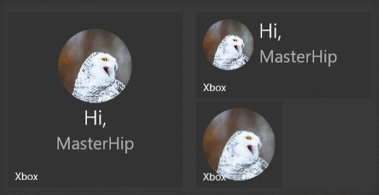

Notifications Overview (Archived)
Warning
This component has been archived and is not available in the current version of the Windows Community Toolkit.
For WinUI 3 apps, notifications were superseded by the App notifications feature in the Windows App SDK.
For UWP apps, the original notifications package was ported to Windows Community Toolkit Labs and is available only for UWP applications.
For more information:
Original documentation follows below.
Adaptive Live Tiles and interactive Toasts are key engagement components of a UWP Application on Windows 10. Instead of having to deal with XML, you can now use Windows Community toolkit and its notification extensions to work with Tiles and notifications using a complete object model.
Tiles
| Documentation |
|---|
| Create Adaptive Tile |
| Sending a local Tile notification |
Sample Output

Toasts
| Documentation |
|---|
| Interactive Toast Notifications |
| Send a local toast |
Sample Output
Sending toasts from desktop C# apps
If you're developing a non-UWP C# app for Windows, the Windows Community Toolkit makes it easier to send an interactive toast notification from your desktop C# app. To learn more, see Send a local toast notification from C# apps.
Requirements
| Device family | Universal, 10.0.10240.0 or higher |
|---|---|
| Namespace for C# | Microsoft.Toolkit.Uwp.Notifications |
| Namespace for JavaScript | Microsoft.Toolkit.Uwp.Notifications.Javascript |